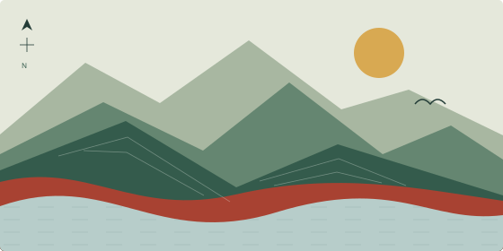

JAPAN · THE SUMMER CHAPTER
A little further,
together.*
Kyoto & Osaka 京都 · 大阪
12–14 June 20273 families2 cities, many possibilities

WHERE WE’LL BESame dates. Room for different plans.
Cedar + MapleKyoto12–14 JUN
BirchOsaka12–14 JUN
All three families · shared plans appear once
Times are local to each activitySATURDAY
12 June
Kyoto 京都
01⌂ Cedar + Maple · staying in Kyoto
Osaka 大阪
02⌂ Birch · staying in Osaka
SUNDAY
13 June
Kyoto 京都
01⌂ Cedar + Maple · staying in Kyoto
Osaka 大阪
02⌂ Birch · staying in Osaka
Osaka → Kyoto → Osaka
Birch · join the Kyoto dinner; return to Osaka.
Times to confirm · travel plan
MONDAY
14 June
Kyoto 京都
01⌂ Cedar + Maple · staying in Kyoto
↝
A little unplanned time.
Cedar · an open afternoonOsaka 大阪
02⌂ Birch · staying in Osaka
A SKETCH OF THE JOURNEY
Two bases. One shared evening.
Planned connections · no route or journey-time estimates
Everyone: Cedar + Maple in Kyoto; Birch in Osaka. Shared dinner in Kyoto on 13 June.
Routes remain as trip context when travelers are filtered. The text above describes the selected family.